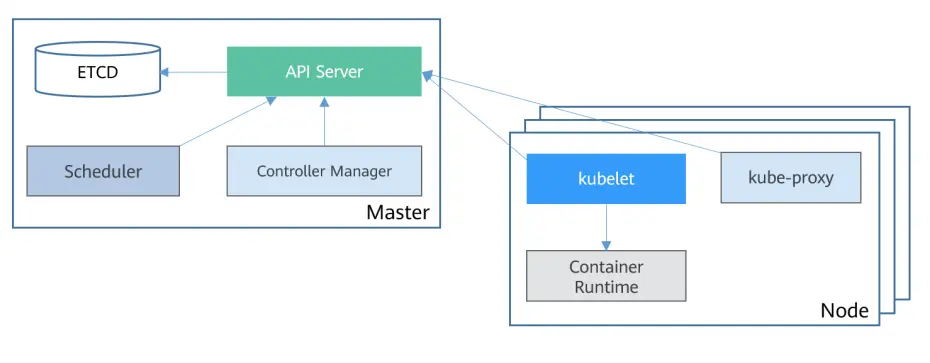

Basic Kubernetes Components

Kubernetes cluster components fall into two classes, which is to say two node roles.
- master
Master nodes mainly manage the whole cluster, usually 3 or 5 of them. The typical components running there are kube-apiserver, kube-controller-manager, kube-scheduler, and etcd. Although they can also serve workloads, that is not recommended in production.
- node
Node nodes mainly carry business traffic, and their number can range from a few to dozens or even hundreds. The typical components running there are kubelet and kube-proxy; these are also deployed on masters.
In production, it is best not to split a cluster too finely. An overly fine split raises operating cost, lowers resource utilization, and keeps Kubernetes from exploiting its elasticity to the full.
etcd
etcd is the cluster's storage component, usually run as 3 or 5 instances on master nodes.
etcd uses two-phase commit based on the raft protocol to guarantee strong consistency in distributed scenarios. More instances is not better: the more instances, the longer a commit takes, and in practice it rarely exceeds 7 instances.
The machines etcd runs on need the best possible disk IO; using SSDs noticeably lowers etcd response time.
kube-apiserver
etcd stores all the cluster's metadata, but every exchange of cluster metadata has to go through kube-apiserver.
Here metadata means definitions of objects such as workloads and secrets, along with information about the state of the various objects.
In a multi-master highly available cluster, kube-apiserver, kube-controller-manager, and kube-scheduler are all deployed as static Pods on every master node.
kube-apiserver provides a unified entry point for reading, updating, adding, and deleting the whole cluster's metadata.
kube-controller-manager
kube-controller-manager is a group of controllers, including the replica controller, node controller, and namespace controller.
When you declaratively define a workload in the cluster, kube-controller-manager generates a series of objects so that the various components can work together.
What kube-controller-manager does is essentially translate human-friendly metadata into machine-friendly metadata.
kube-scheduler
Kubernetes is a distributed operating system with many nodes.
So how does it choose which node an application runs on? You can specify it by hand, or leave it to the scheduler, kube-scheduler.
The job of kube-scheduler is simple: pick a suitable node for a workload. What is the problem with specifying it by hand?
kubelet
Once a workload has chosen a node, kubelet learns about the workload that node needs to run.
kubelet interacts with the container runtime to actually create the workload resources.
kubelet implements the full lifecycle management of a node's workloads: creation, mounting storage, setting environment variables, consumption, eviction, and so on.
kubelet also reports the state of Nodes and Pods.
kube-proxy
Once a workload is running, it needs an entry point for outside access.
At that point kube-proxy can configure traffic forwarding rules through iptables or ipvs, bringing external traffic into the application workload.